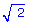

Si la
masa de la Tierra se redujese a la mitad, para que la fuerza gravitatoria
entre Tierra y Luna se mantuviese constante, la distancia entre ambas
debería hacerse:
a) 
veces menor b)
veces mayor c) 2 veces mayor d) 2
veces menor |
Determina la fuerza gravitatoria (Vector)
entre dos masas puntuales cuyas magnitudes y posiciones, en el S.I, se
indican a continuación:
a)
m1: 4·106, (0, 0) | m2: 5·106,
(4, 0) b)
m1: 2·106, (-3, 0) | m2: 4·105
(0, 0)
c)
m1: 105, (2, 3) | m2: 106,
(1, -4) |
Suponiendo que la Tierra describe una órbita
circular alrededor del Sol calcula su velocidad areolar, velocidad lineal
y momento angular (Módulo).
Datos de la Tierra: m = 5.98·1024 kg, r (Órbita)
= 1.49·108 km, T = 1 año |
La Tierra en su órbita elíptica alrededor
del Sol presenta dos puntos, el afelio y el perihelio, en los que su velocidad
es perpendicular a su vector de posición respecto al Sol. Si en el afelio
la velocidad de la Tierra es de 30 km/s y la distancia entre los centros
de Tierra y Sol es 1.52·108 km, calcular la velocidad de la
Tierra en el perihelio sabiendo que en este punto la distancia entre los
centros de la Tierra y del Sol es de 1.47·108 km
|